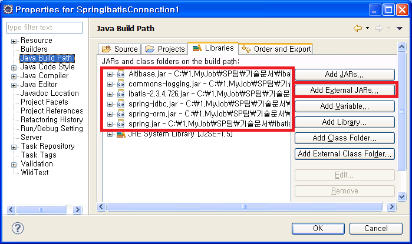

ALTIBASE와 연동하기 위해서는 iBATIS에 dataSource를 지정할 수도 있고, Spring에 dataSource를 지정할 수도 있다. 본 장에서는 이 두 방법을 이용하여 ATLIBASE와 연동하는 방법에 대해 설명한다.
Spring에 dataSource를 설정하는 경우
iBATIS와 Spring을 함께 사용하기 위해서는 Spring의 applicationContext.xml 파일에 iBATIS의 SqlMapClientFactoryBean bean을 지정해 주면 된다. 이 후 각각의 DAO bean에 SqlMapClientFactoryBean bean을 참조하도록 설정해주면 다른 bean 에서 SqlMapClient 객체를 사용하여 CRUD에 해당하는 메소드들을 호출할 수 있다.
iBATIS, Spring을 연동한 환경에서 Spring에 dataSource를 설정하는 방법은『ALTIBASE_Spring_연동가이드』문서에서 설명한 방법들 중 하나를 선택하여 applicationContext.xml에 dataSource를 지정해주고, iBATIS와 연동을 위해 iBATIS의 SqlMapClientFactoryBean bean을 지정해주면 된다. 이 때 SqlMapClientFactoryBean bean의 configLocation property에 SqlMapConfig 파일의 이름을 명시해준다.
다음은 applicationContext.xml 파일에서 dataSource와 SqlMapClientFactoryBean bean을 지정해주는 예제이다.
예) SpringIbatisConnection1의 applicationContext.xml 파일
… <!-- DriverManagerDataSource 클래스를 이용한 데이터 소스 설정 --> <bean id="dataSource" class="org.springframework.jdbc.datasource.DriverManagerDataSource"> <!-- JDBC Driver 클래스명 설정 --> <property name="driverClassName" value="Altibase.jdbc.driver.AltibaseDriver"/> <!-- connection url--> <property name="url" value="jdbc:Altibase://192.168.1.35:21129/mydb"/> <!-- DB 사용자 계정 설정 --> <property name="username" value="sys"/> <!-- DB 사용자 패스워드 설정 --> <property name="password" value="manager" /> </bean> <bean id="sqlMapClient" class="org.springframework.orm.ibatis.SqlMapClientFactoryBean"> <property name="dataSource" ref="dataSource"/> <property name="configLocation" value="SqlMapConfigExample.xml"/> </bean> <!-- DAO 클래스의 bean 설정 --> <bean id="personDao" class="examples.domain.PersonDao"> <property name="sqlMapClient" ref="sqlMapClient"/> </bean> …
위의 예제 SpringIbatisConnection1 프로젝트를 실행하기 위해서는 Altibase.jar, ibatis-2.3.4.x.jar 파일과 spring-jdbc.jar, spring-orm.jar, spring.jar, commons-logging.jar 파일이 필요하다. spring-jdbc.jar, spring-orm.jar, spring.jar, commons-logging.jar 파일은 Spring Framework에 포함된 파일이다. 자세한 디렉토리 위치는 『ALTIBASE_Spring_연동가이드』문서를 참고하면 된다.

iBATIS에 dataSource를 설정하는 경우
iBATIS, Spring을 연동한 환경에서 iBATIS에 dataSource를 설정하는 방법은 위의 “SqlMapConfig 파일에 dataSource를 설정하여 ALTIBASE와 연동” 부분에서 설명한 방법과 동일한 방법으로 SqlMapConfig 파일에 <transactionManager>에 ALTIBASE 연결을 위한 property를 지정하면 된다.
다만, Spring에서 iBATIS를 연동하기 위해 위의 “Spring에서 dataSource를 설정하는 경우”와 마찬가지로 iBATIS의 SqlMapClientFactoryBean bean 을 applicationContext.xml 파일에 지정해줘야 한다.
다음은 iBATIS와 Spring 연동 환경에서 iBATIS에 dataSource를 설정하여 ALTIBASE와 연동하는 예제이다.
예) SpringIbatisConnection2의 applicationContext.xml 파일
… <bean id="sqlMapClient" class="org.springframework.orm.ibatis.SqlMapClientFactoryBean"> <property name="configLocation" value="SqlMapConfigExample.xml"/> </bean> <!-- DAO 클래스의 bean 설정 --> <bean id="personDao" class="examples.domain.PersonDao"> <property name="sqlMapClient" ref="sqlMapClient"/> </bean> …
예) SpringIbatisConnection2의 SqlMapConfigExample.xml 파일
<sqlMapConfig>
<properties resource="db.properties" />
<transactionManager type="JDBC" >
<dataSource type="SIMPLE">
<property name="JDBC.Driver" value="${driver}"/>
<property name="JDBC.ConnectionURL" value="${url}"/>
<property name="JDBC.Username" value="${username}"/>
<property name="JDBC.Password" value="${password}"/
</dataSource>
</transactionManager>
<sqlMap resource="Person.xml" />
</sqlMapConfig>
위의 예제를 보면 dataSource를 SqlMapConfigExample.xml에 설정하고 applicationContext.xml 파일에는 이 SqlMapConfigExample.xml 파일을 읽어 SqlMapClientFactoryBean bean을 설정하고 있는 것을 확인할 수 있다.
SpringIbatisConnection2 예제를 실행하기 위해서는 Altibase.jar, ibatis-2.3.4.x.jar 파일과 spring-orm.jar, spring.jar, commons-logging.jar 파일이 필요하다. spring-orm.jar, spring.jar, commons-logging.jar 파일은 Spring Framework에 포함된 파일이다. 자세한 디렉토리 위치는 『ALTIBASE_Spring_연동가이드』문서를 참고하면 된다.
ALTIBASE의 ConnectionPool을 이용
ALTIBASE에서 제공하는 ABConnectionPoolDataSource 클래스를 사용하면 ALTIBASE의 ConnectionPool을 이용할 수 있는데, iBATIS, Spring 연동 환경에서는 Spring의 applicationContext.xml 파일에 ABConnectionPoolDataSource 클래스를 이용하여 dataSource bean을 정의하면 된다. Spring과 연동 없이 iBATIS에서만 ALTIBASE의 ConnectionPool을 사용할 수 있는 방법은 없다는 것을 주의해야 한다. 자세한 내용은 『ALTIBASE_Spring_연동가이드』문서를 참고하여 설정하면 된다.
예) 『ALTIBASE_Spring_연동가이드』에 첨부된 AltibaseConnectionPool의 applicationContext.xml 파일
… <bean id="dataSource" class="Altibase.jdbc.driver.AltibaseConnectionPoolDataSource"> < <!-- connection url--> <property name="url" value="jdbc:Altibase://192.168.1.35:21129/mydb"/> <!-- DB 사용자 계정 설정 --> <property name="user" value="sys"/> <!-- DB 사용자 패스워드 설정 --> <property name="password" value="manager" /> </bean> …
트랜잭션 관리
iBATIS에서 DB와 연동할 경우 SqlMapConfig 파일의 <transactionManager> 에 dataSource를 지정하면 SqlMap 파일에서 정의한 각각의 CRUD 메소드가 호출될 때 자동으로 setAutoCommit(false); 가 호출이 된다. 이후 해당 메소드가 종료되면 트랜잭션은 commit이 되고 다시 default autocommit 모드로 바뀌게 된다.
또한 프로그래머가 어플리케이션에서 명시적으로 트랜잭션을 관리할 수 도 있다.
만약, iBATIS와 Spring을 연동하였다면 Spring에서도 트랜잭션을 관리할 수 있다.
본 장에서는 이러한 트랜잭션 관리 방법들을 소개한다.
iBATIS에서 트랜잭션 관리
iBATIS에서 DB와 연동할 경우 SqlMapConfig 파일의 <transactionManager> 에 dataSource를 지정하면 SqlMap 파일에서 정의한 각각의 CRUD 메소드가 호출될 때 자동으로 setAutoCommit(false); 가 호출이 된다. 이후 해당 메소드가 종료되면 트랜잭션은 commit이 되고 다시 default autocommit 모드로 바뀌게 된다.
또한 어플리케이션에서 프로그래머가 직접 트랜잭션을 관리할 수 있다.
이때, 트랜잭션을 시작하기 위해서는 SqlMapClient의 startTransaction() 메소드를 호출하고, commit 하고자 할 경우에는 commitTransaction () 메소드, commit 없이 rollback 하고자 할 경우에는 endTransaction() 메소드를 호출하면 된다.
다음은 어플리케이션에서 명시적으로 트랜잭션을 처리하는 예제이다..
예) TransactionSample의 PersonApp.java 파일
…
SqlMapClient sqlMap = SqlMapClientBuilder.buildSqlMapClient(reader);
//start transaction
sqlMap.startTransaction();
//insert Person
Person newPerson1 = new Person();
…
sqlMap.insert ("insertPerson", newPerson1);
//commit
sqlMap.commitTransaction ();
Person newPerson2 = new Person();
…
sqlMap.insert ("insertPerson", newPerson2);
// selected 2 rows.
List<Person> list = (List<Person>)sqlMap.queryForList("getAllPersons");
System.out.println("Selected "+list.size()+" records.");
for(int i=0; i< list.size();i++){
System.out.println(list.get(i));
}
//rollback
sqlMap.endTransaction();
// selected only 1 row.
list = (List<Person>)sqlMap.queryForList("getAllPersons");
System.out.println("Selected "+list.size()+" records.");
for(int i=0; i< list.size();i++){
System.out.println(list.get(i));
}
…
위의 예제 TransactionSample 프로젝트를 실행하기 위해서는 “SqlMapConfig 파일에 dataSource를 설정하여 ALTIBASE와 연동”과 마찬가지로 Altibase.jar, ibatis-2.3.4.x.jar 파일이 필요하다.
Spring에서 트랜잭션 관리
iBATIS, Spring 을 연동한 환경이라면, Spring에서 트랜잭션을 관리할 수 있다. 본 문서에서는 Spring의 applicationContext.xml 파일에 선언적으로 트랜잭션을 관리/처리하는 예제(LobSpringIbatisSample 예제)를 포함하고 있다. 보다 자세한 내용은『ALTIBASE_Spring_연동가이드』문서를 참고하면 된다.
{kind=link}